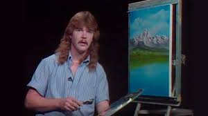

Bob Ross Fan Page
 Robert Norman Ross (October 29, 1942 – July 4, 1995) was an American painter, art instructor, and television host. He was the creator and host of The Joy of Painting, an instructional television program that aired from 1983 to 1994 on PBS in the United States, and also aired in Canada, Latin America, and Europe. Ross went from being a public television personality in the 1980s and 1990s to being an Internet celebrity in the 21st century, becoming popular with fans on YouTube and many other websites after his death. https://en.wikipedia.org/wiki/Bob_Ross
Robert Norman Ross (October 29, 1942 – July 4, 1995) was an American painter, art instructor, and television host. He was the creator and host of The Joy of Painting, an instructional television program that aired from 1983 to 1994 on PBS in the United States, and also aired in Canada, Latin America, and Europe. Ross went from being a public television personality in the 1980s and 1990s to being an Internet celebrity in the 21st century, becoming popular with fans on YouTube and many other websites after his death. https://en.wikipedia.org/wiki/Bob_Ross

Careful, this is not the real Bob, he is an imposter, you can tell because he lacks the afro and beard. He wishes he had the fro and painting skills as the mighty Ross